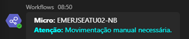
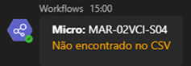
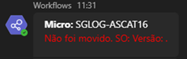
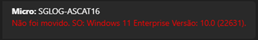

Nosso Objetivo
Otimizar a movimentação de micros no domínio, garantindo um processo com mais agilidade, padronização e total rastreabilidade, minimizando a intervenção manual.
Como a Automação Funciona
1. Monitoramento
A automação vigia a OU "Computers", a porta de entrada para todas as novas máquinas no domínio.
2. Verificação
A cada 2 minutos, o sistema verifica se novos micros ingressaram na OU padrão.
3. Análise e Movimentação
Se um micro atende aos critérios (SO homologado, nomenclatura correta), ele é movido para sua OU de destino.
4. Registro e Comunicação
Cada evento é registrado e notificado em tempo real para um canal no Microsoft Teams.
Exemplos de Logs no Teams
Movido com Sucesso
O micro atendeu a todos os critérios e foi movido para a OU correta automaticamente.
Movimentação Manual
Geralmente ocorre com notebooks, que exigem uma verificação manual.
Não Encontrado no CSV
A nomenclatura do micro não está cadastrada. O cadastro será realizado pela equipe.
SO não Identificado
O sistema não identificou o SO. Uma reinicialização do micro resolve o problema.
SO não Homologado
Detectada a instalação de um sistema operacional não aprovado.
Conclusão
A automação já está em pleno funcionamento, proporcionando maior eficiência e controle no processo de movimentação de micros, fortalecendo a segurança do nosso ambiente de domínio.